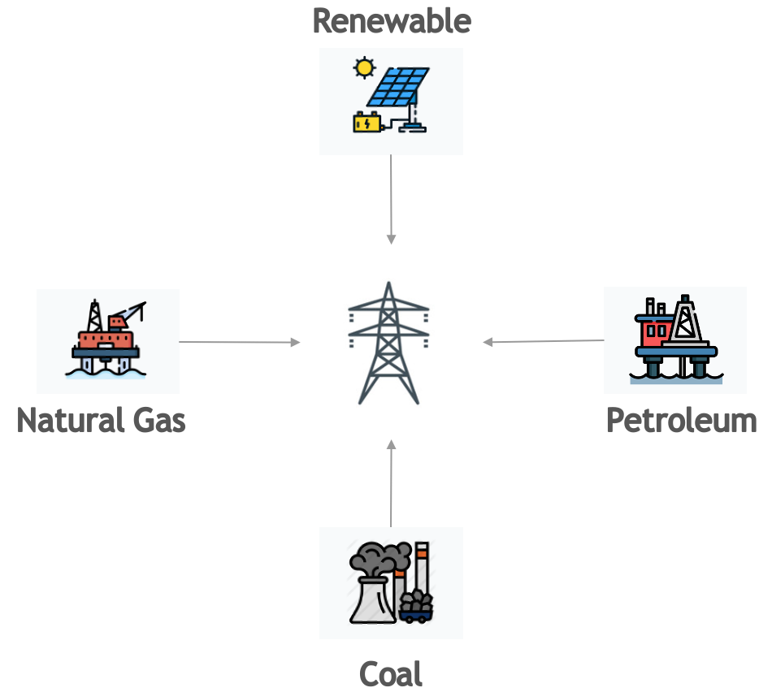

Methodology¶
The shape of the calculation¶
Emissions, expressed in kilograms of CO₂-equivalent (CO₂eq), are the product of two factors:
E = Energy consumed by the computational infrastructure, in kilowatt-hours
C = Carbon intensity of that electricity, in g CO₂ emitted per kilowatt-hour
Emissions (kgCO₂eq) = E × C
CodeCarbon computes E by sampling CPU, GPU and RAM power at a fixed interval
and integrating over time, and resolves C from the machine's location or
cloud region. Both halves have fallbacks, and which fallback ran is what
determines how much you should trust the result.
Expanded, that is four terms:
emissions = Σ_intervals (power × Δt × PUE) × carbon_intensity
power— watts drawn by the CPU, GPU and RAM at the moment of sampling.Δt— the sampling interval,measure_power_secs, 15 seconds by default. Power × Δt is energy; summing over every interval gives the energy of the run.PUE— power usage effectiveness, an optional multiplier for datacentre overhead such as cooling. It defaults to 1.0, meaning no overhead assumed.carbon_intensity— grams of CO₂-equivalent emitted per kilowatt-hour on the grid the machine draws from.
E above is therefore the PUE-inflated energy: a pue you set is already
folded into every energy figure CodeCarbon reports, per component. This matters
when you do arithmetic with the CSV columns — see
Power Usage Effectiveness.
| Half of the formula | Best case | Worst case |
|---|---|---|
E — energy |
Hardware energy counters (RAPL, EMI, NVML) | A CPU model's catalogue TDP scaled by CPU load |
C — carbon intensity |
Live grid intensity from Electricity Maps | The 475 gCO₂eq/kWh world average |
Nothing in the output states which case applied to C. For E, the log line
emitted at startup names the CPU backend.
Energy: what is measured, what is modelled¶
Power is sampled at measure_power_secs, default 15 seconds, configurable when
instantiating the tracker. Energy is the integral of power over time:
Energy = Power × Time.
| Component | Best available source | Modelled fallback |
|---|---|---|
| CPU | Intel RAPL (Linux), Raspberry Pi 5 PMIC, Energy Meter Interface (Windows 11), powermetrics (macOS), Intel Power Gadget (legacy) |
TDP × CPU load, or a flat constant |
| GPU | NVML via nvidia-ml-py (Nvidia) or AMDSMI (AMD) — a direct device reading |
none; without a supported GPU library, GPU is not counted |
| RAM | the PMIC DRAM rails on a Raspberry Pi 5; RAPL only on specific hardware | modelled from an estimated DIMM count |
CodeCarbon does not separately model disk I/O, network transfer, displays, cooling or other peripherals. Those are usually small for local, code-level experiments, and they are not exposed through the same low-overhead interfaces. They can matter for workloads dominated by data movement, storage or distributed communication.
Tracking modes¶
The tracking_mode parameter ("machine" or "process", default
"machine") controls the scope of attribution, independently of which
measurement backend was selected.
Machine mode measures the whole hardware stack. It is the straightforward reading, and the right one on a dedicated machine.
Process mode estimates the share attributable to your Python process and its children, by sampling their CPU time against total CPU capacity. This is a software approximation — it does not read per-process hardware counters — and is preferable on shared machines.
GPU is always machine-wide
Process mode affects CPU and RAM attribution only. GPU power is measured at the device level, so on a shared GPU CodeCarbon still attributes the entire GPU's consumption to your run.
On the estimation path, tracking_mode also changes the power model
When CodeCarbon falls back to cpu_load mode, tracking_mode selects not
just the attribution scope but a different power curve — cubic with a
10% floor for machine mode, linear with no floor for process mode. See
The two cpu_load models. On the hardware-counter
paths (RAPL, EMI, NVML) this does not apply.
Power Usage Effectiveness (PUE)¶
If you set pue, it is applied inside the measurement loop to each
component's energy before accumulation, in _do_measurements
(emissions_tracker.py):
energy *= self._pue
This means cpu_energy, gpu_energy and ram_energy in the CSV are already
inflated by the PUE, not just energy_consumed and emissions. Do not
multiply by PUE a second time when reusing the per-component columns. Water
consumption is derived from the post-PUE energy in the same loop.
CPU¶
Which backend gets chosen¶
This is the part of CodeCarbon most often misread. The selection logic is
ResourceTracker.set_CPU_tracking in
core/resource_tracker.py,
and it is evaluated strictly in this order — the first row that applies wins.
Rows 3–10 are the platform backends tried by _try_platform_cpu_backend. If
none of them matches, set_CPU_tracking delegates to _setup_fallback_tracking,
which is where rows 11 and 12 are decided.
| # | Condition | Result | Source |
|---|---|---|---|
| 1 | force_cpu_power is set |
Every platform backend is skipped — RAPL is not consulted even if it is available — and your value becomes the TDP handed to row 11 or row 12 below. It is not the reported power. | set_CPU_tracking |
| 2 | force_mode_cpu_load is set, psutil present, and a TDP is known (or force_cpu_power is set) |
cpu_load mode |
set_CPU_tracking, _setup_cpu_load_mode |
| 3 | Linux and RAPL files readable | intel_rapl — hardware energy counters |
_try_platform_cpu_backend |
| 4 | Raspberry Pi 5 (vcgencmd pmic_read_adc answers) |
raspberry — PMIC power readings |
_try_platform_cpu_backend, cpu.is_raspberry |
| 5 | macOS and Apple Silicon and psutil present |
cpu_load mode |
_try_platform_cpu_backend, _setup_cpu_load_fast |
| 6 | macOS and Apple Silicon and no psutil and powermetrics usable |
powermetrics |
_try_platform_cpu_backend |
| 7 | macOS and Intel and Intel Power Gadget installed | intel_power_gadget |
_try_platform_cpu_backend |
| 8 | macOS and Intel and powermetrics usable |
powermetrics |
_try_platform_cpu_backend |
| 9 | Windows and EMI available | windows_emi — hardware energy counters |
_try_platform_cpu_backend |
| 10 | Windows and Intel Power Gadget installed | intel_power_gadget |
_try_platform_cpu_backend |
| 11 | none of the above, psutil present |
cpu_load mode |
_setup_fallback_tracking |
| 12 | none of the above, no psutil |
constant mode |
_setup_fallback_tracking |
Two consequences worth stating plainly, because they surprise people:
force_cpu_powerdisables hardware measurement, and it is not the reported power. Setting it on a machine with working RAPL replaces a real counter with an estimate. Becausepsutilis a hard dependency, the estimate is normallycpu_loadmode with your value as the TDP, so in machine modeforce_cpu_power=65reports65 × (0.1 + 0.9 × load³)watts, between 6.5 W and 65 W, not a flat 65 W. Only on an installation withoutpsutildoes it become a flat figure, and then it is half your value, not your value (row 12 andconstantmode below). Unlike a registry TDP, it is used as given: it is not multiplied by the CPU package count.- On Apple Silicon,
powermetricsis effectively unreachable.psutilis a hard dependency of CodeCarbon, so row 5 fires before row 6 in every normal installation. Thesudo-granting instructions that used to appear here describe a path the code no longer takes.
The fallback constants¶
When no hardware counter is available, CodeCarbon needs a power figure. It gets
one from the following ladder, in TDP._main in
core/cpu.py:
| Situation | TDP used | Constant | Source |
|---|---|---|---|
| CPU model detected and present in the TDP registry (2000+ Intel and AMD parts) | the registry value | — | TDP._get_cpu_power_from_registry |
CPU model detected but absent from the registry, psutil present |
threads × 4 W |
DEFAULT_POWER_PER_CORE = 4 |
core/cpu.py |
CPU model absent from the registry and no psutil, or the model could not be detected at all |
85 W |
POWER_CONSTANT = 85 |
external/hardware.py, applied in CPU.from_utils |
A TDP found by this ladder is multiplied by the physical CPU package count
(in set_CPU_tracking) to give the machine-level ceiling; the 85 W constant
is not.
That ceiling is then turned into an instantaneous power reading in one of two ways, and the two ways are not the same:
-
cpu_loadmode — see the next section. It uses two different power models depending ontracking_mode. -
constantmode — reached only whenpsutilis unavailable — applies a flat half of TDP (CPU._get_power_from_cpusinexternal/hardware.py):power = TDP × CONSUMPTION_PERCENTAGE_CONSTANT # CONSUMPTION_PERCENTAGE_CONSTANT = 0.5CONSUMPTION_PERCENTAGE_CONSTANT = 0.5is defined at the top ofexternal/hardware.py.
The two cpu_load models¶
cpu_load mode does not have one power model. It has two, selected by
tracking_mode inside
CPU._get_power_from_cpu_load
in external/hardware.py. They differ in shape, not only in scope, and the
difference is large at low load.
tracking_mode="machine" |
tracking_mode="process" |
|
|---|---|---|
| Load source | system-wide CPU busy time since the previous reading, from psutil.cpu_times() (SystemCPULoadMeter) |
per-process CPU-time deltas over wall clock, summed across the process and its children |
| Normalisation | none — already a 0–100% figure | divided by core count |
| Curve | cubic | linear |
| Idle floor | 10% of TDP | none — 0% load gives 0 W |
# machine mode
load_factor = 0.1 + 0.9 * ((cpu_load / 100.0) ** 3)
power = tdp * load_factor
# process mode
cpu_load_normalized = cpu_load / self._cpu_count
power = self._tdp * cpu_load_normalized / 100
The same workload measured both ways will not differ only by scope
Switching tracking_mode silently swaps the power model. At low
utilisation the two diverge sharply: machine mode never reports below 10%
of TDP, while process mode reports proportionally to load and reaches zero.
At 50% load, machine mode gives 0.1 + 0.9 × 0.125 = 21% of TDP, while a
process saturating half the cores gives 50% of TDP — more than double,
from the same underlying utilisation.
If you compare a machine-mode run against a process-mode run and the numbers disagree by more than the attribution scope explains, this is why.
None of these shape choices is sourced in the code. The cubic exponent, the 0.1 floor in machine mode, and the absence of any floor in process mode are all asserted, with no comment, citation or fitting procedure anywhere in the module. They are plausible defaults, not measurements.
Accuracy and validation reports how far this fallback lands from measured RAPL energy — in machine mode only; those figures do not transfer to process mode.
Per-platform notes¶
Linux. Energy is read from Intel RAPL files under
/sys/class/powercap/intel-rapl/subsystem
(Weaver). Every CPU listed
there is tracked. The files must exist and be readable by the running user;
on many distributions they are root-only by default. Despite the "Intel RAPL"
name, AMD processors are supported since Linux kernel 5.8. On multi-die CPUs,
package domains can mirror the same socket-wide energy counter. CodeCarbon
flags counters holding the same value at startup and drops a duplicate only
once it has also accumulated the very same energy over a measurement interval,
so CPU energy is neither counted once per die nor missing a genuine package
that coincidentally held the same value. See RAPL Metrics for the
details.
Windows. Tracks Intel and AMD processor energy consumption using the Energy Meter Interface (EMI), through which Windows 11 exposes the CPU RAPL energy counters (the same hardware counters CodeCarbon reads on Linux). It is built into the OS: no third-party driver, no administrator rights and no extra dependency are needed.
Note: EMI reports CPU power only on Windows 11 running on bare metal (on Windows 10, only on devices with dedicated metering hardware, such as the Surface Book). On virtual machines or older Windows versions, CodeCarbon falls back to the CPU-load estimation mode described above.
Note: as on Linux, only package channels are measured. Windows exposes
one EMI device per metered component, so a CPU shows up as one device per
core (RAPL_Package0_Core3_CORE) next to the device holding the package
channel (RAPL_Package0_PKG). Those per-core channels, like PP0/PP1,
are subdomains of the package: measuring both would count the same energy
twice, so CodeCarbon keeps the package channels only. On multi-die CPUs
where every die mirrors the same socket-wide counter, the duplicates are
detected and dropped as well. The DRAM channels are excluded too, unless
the
rapl_include_dram
option is enabled.
macOS, Intel. Tracks Intel processors energy consumption using the
Intel Power Gadget. You need to install it yourself from this
source.
Intel has since discontinued the tool; this is a known limitation,
tracked in issue #457.
macOS, Apple Silicon. The Apple Silicon chip contains both CPU and GPU, and
powermetrics can read both, but it requires sudo and — as row 5 of the table
above shows — cpu_load mode is selected first whenever psutil is installed,
which is the normal case. There is no known way to read Apple Silicon energy
without administrative rights; if you know of one, please
open an issue.
Legacy Intel Power Gadget is retained on all platforms for machines where it is still installed, but it should not be relied on for new setups.
CPU hardware background¶
The CPU die is the processing unit itself. It's a piece of semiconductor that has been sculpted/etched/deposited by various manufacturing processes into a net of logic blocks that do stuff that makes computing possible. The processor package is what you get when you buy a single processor. It contains one or more dies, plastic/ceramic housing for dies and gold-plated contacts that match those on your motherboard. RAPL and EMI report at the package level, which is why CodeCarbon deduplicates subdomain channels.
In Linux kernel, energy_uj is a current energy counter in micro joules. It is used to measure CPU core's energy consumption.
Micro joules is then converted in kWh, with formula kWh=energy * 10** (-6) * 2.77778e-7.
For example, on a laptop with Intel(R) Core(TM) i7-7600U, Code Carbon will read two files : /sys/class/powercap/intel-rapl/intel-rapl:1/energy_uj and /sys/class/powercap/intel-rapl/intel-rapl:0/energy_uj
For how a rolling energy counter becomes a power figure, see Power Estimation. For the primary sources on RAPL, see Khan et al., RAPL in Action and Weaver, Reading RAPL energy measurements from Linux; this blog post is a useful informal walkthrough.
GPU¶
Nvidia GPU energy is read through nvidia-ml-py (installed with the package),
which queries NVML — a direct device reading, not a model. There is no fallback:
if NVML is unavailable, GPU energy is not counted at all rather than estimated.
On Apple Silicon under powermetrics, the integrated GPU is reported as a
separate AppleSiliconChip device.
RAM¶
There is no hardware counter for RAM power on the platforms CodeCarbon
supports, and reading the actual DIMM configuration needs root. So CodeCarbon
runs a two-stage estimate in
external/ram.py.
The exception is the Raspberry Pi 5, where the PMIC measures the DRAM rails
and that reading replaces the estimate.
And some RAPL interface could expose RAM energy but they are rare.
Stage 1 — guess the DIMM count from total RAM, using a hardcoded step
function (RAM._estimate_dimm_count):
| Total RAM | Assumed DIMMs |
|---|---|
| ≤ 2 GB | 1 |
| ≤ 16 GB | 2 |
| 17–64 GB | 4 |
| 65–128 GB | 8 |
| > 128 GB | ceil(total_GB / largest_fitting_DIMM_size), capped at 32 |
Stage 2 — assign power per DIMM with a marginal-efficiency taper
(RAM._calculate_ram_power):
| Parameter | Value |
|---|---|
| Base power per DIMM, x86 | RAM_SLOT_POWER_X86 = 5 W |
| Base power per DIMM, ARM | 1.5 W |
| DIMMs 1–4 | 100% of base each |
| DIMMs 5–8 | 90% of base each |
| DIMMs 9–16 | 80% of base each |
| DIMMs 17+ | 70% of base each |
| Minimum, x86 | 10 W (2 DIMMs × 5 W) |
| Minimum, ARM | 3 W |
The only citation anywhere in the module is a pre-v3
Crucial FAQ
recording the old 3 W-per-8 GB rule (in the RAM class docstring), which the current model
replaced. Neither the 5 W figure nor any of the 0.9/0.8/0.7 multipliers has a
source in the code. They are asserted values that appear reasonable, not
measurements.
The change from v2's 3 W-per-8 GB to per-DIMM power is nonetheless directionally right: RAM power tracks the number of physical modules, not the number of gigabytes. A server with 1 TB across 8 DIMMs does not draw 128× a laptop's RAM power. Worked examples from the model above:
- 8 GB laptop → 2 DIMMs → 10 W
- 32 GB desktop → 4 DIMMs → 20 W
- 64 GB desktop → 4 DIMMs → 20 W (identical to 32 GB)
- 128 GB server → 8 DIMMs → 38 W
- 1 TB server → 8 DIMMs → 38 W (identical to 128 GB)
If you can measure or look up your real configuration, do so and override the estimate. On Linux:
sudo lshw -C memory -short | grep DIMM
/0/37/0 memory 4GiB DIMM DDR4 Synchrone Unbuffered (Unregistered) 2400 MHz
/0/37/1 memory 4GiB DIMM DDR4 Synchrone Unbuffered (Unregistered) 2400 MHz
/0/37/2 memory 4GiB DIMM DDR4 Synchrone Unbuffered (Unregistered) 2400 MHz
/0/37/3 memory 4GiB DIMM DDR4 Synchrone Unbuffered (Unregistered) 2400 MHz
Four slots, so pass force_ram_power=20 (4 × 5 W) — or better, a wattage you
have measured — to the tracker. force_ram_power bypasses the whole heuristic.
Old machine could use 2 Mb memory stick, where modern servers will use 512 Mb memory stick, making our heuristic innacurate.
Carbon intensity¶
Carbon intensity is the weighted average emissions of the energy sources feeding the grid the machine is drawing from. Fossil fuels — coal, petroleum, natural gas — carry high intensities; solar, hydro, wind, nuclear, biomass and geothermal carry low ones. The local mix determines the figure.

Resolution order¶
CodeCarbon resolves C through the ladder below, implemented in
core/emissions.py.
The first level that answers wins.
| # | Level | Condition | Data | Source |
|---|---|---|---|---|
| 1 | Forced value | force_carbon_intensity_g_co2e_kwh is set |
your number | get_cloud_emissions, get_private_infra_emissions |
| 2 | Cloud region | running on a recognised cloud provider and the provider/region pair is in impact.csv |
data/cloud/impact.csv |
get_cloud_emissions |
| 3 | Electricity Maps | an API token is configured | live grid intensity by lat/lon or country code | get_private_infra_emissions, core/electricitymaps_api.py |
| 4 | Regional | country is US, Canada, China, Sweden, Norway or Finland and a region/bidding zone is known | see Regional data below | get_region_emissions |
| 5 | Country | the country ISO code is in the energy-mix file | global_energy_mix.json, from Our World in Data |
get_country_emissions |
| 6 | World average | nothing above resolved | 475 gCO₂eq/kWh, from the IEA | carbon_intensity_per_source.json, applied in get_cloud_emissions and get_country_emissions |
Some countries lack data for the most recent year, in which case the most recent available year is used.
The fallbacks are silent
Every step down this ladder degrades quietly. If your cloud provider and
region are not in impact.csv — and AWS and Azure publish no
per-region carbon intensity at all; only GCP does — CodeCarbon logs a
warning and continues with levels 3 to 5 for the machine's location, or
uses the 475 g world average if no location is known
(get_cloud_emissions). Likewise an unknown country ISO code drops
straight to the world average (get_country_emissions).
Nothing in the CSV, the API payload or the emissions figure records which
level answered. A run resolved from a live Electricity Maps reading and a
run resolved from the world average produce output of identical shape. If
the provenance matters to you, check the startup logs at WARNING level or
set force_carbon_intensity_g_co2e_kwh explicitly so there is no ambiguity.
Regional data¶
For some countries, CodeCarbon has sub-national carbon intensity data
and uses it when the geolocation service (or the region parameter)
reports a region in one of them:
| Country | Granularity | Source |
|---|---|---|
| United States | State | EPA eGRID2023 emission rate per state |
| Canada | Province | Energy mix per province, 2023 |
| Sweden, Norway, Finland | Electricity bidding zone (SE1-SE4, NO1-NO5, FI) | ENTSO-E generation mix, 2025 |
| China | Province (30 provinces, municipalities and autonomous regions) | MEE/NBS Announcement 2025 No. 47, 2023 factors |
For the United States, the values are the eGRID2023 state annual CO₂eq
total output emission rates published by the U.S. Environmental Protection
Agency (source). They range from
24 gCO₂eq/kWh in Vermont to 893 gCO₂eq/kWh in West Virginia, with a national
value of 350 gCO₂eq/kWh. To update them when EPA publishes a new edition,
download the eGRID data workbook and run
uv run --with openpyxl python codecarbon/data/private_infra/update_usa_emissions.py <workbook> --year <year>.
For China, the values are the official provincial average electricity CO₂ emission factors published by the Ministry of Ecology and Environment and the National Bureau of Statistics (source). They range from 133 gCO₂/kWh in Yunnan to 680 gCO₂/kWh in Tianjin, whereas the national value is 582 gCO₂eq/kWh. Note that these official factors count CO₂ only (no other greenhouse gases, no lifecycle emissions), whereas the per-country values are in CO₂eq. Tibet, Hong Kong, Macao and Taiwan are not in the official table and use the country value.
When a region is not found in the regional data, CodeCarbon falls back to the country value.
The legacy per-fuel table¶
Before per-country intensities were available from Our World in Data, CodeCarbon derived intensity from a country's electricity mix using this table. It is retained for the regional Canadian data, which is published as a mix rather than as an intensity.
| Energy Source | Carbon Intensity (kg/MWh) |
|---|---|
| Coal | 995 |
| Petroleum | 816 |
| Natural Gas | 743 |
| Biofuel | 230 |
| Biomass | 230 |
| Geothermal | 38 |
| Hydroelectricity | 26 |
| Nuclear | 29 |
| Solar | 48 |
| Waste | 230 |
| Wind | 26 |
Carbon Intensity Across Energy Sources
Sources:
- for fossil energies
- for renewables energies
- for biomass and biofuel (IPCC AR5 WG3 Annex III, Table A.III.2, median for "Biomass — dedicated")
- for waste (the biomass factor, following Electricity Maps, which groups waste with biomass)
Then, for example, if the Energy Mix of the Grid Electricity is 25% Coal, 35% Petroleum, 26% Natural Gas and 14% Nuclear:
Net Carbon Intensity = 0.25 * 995 + 0.35 * 816 + 0.26 * 743 + 0.14 * 29 = 731.59 kgCO₂/MWh
Measurement cadence¶
CodeCarbon runs a scheduler that takes a measurement every measure_power_secs
(default 15 s), started by start() and stopped by stop(). The measurement
itself is fast and the memory footprint is small, so overhead is not
significant at the default interval.
A second scheduler, scheduler_monitor_power, samples power once per second.
It exists for hardware that exposes instantaneous power but no cumulative
energy counter — cpu_load mode in particular — so that the per-interval
energy is an average of many samples rather than a single instant.
Estimation of Equivalent Usage Emissions¶
The CodeCarbon dashboard provides equivalent emissions and energy usage comparisons to help users better understand the carbon impact of their activities. These comparisons are based on the following assumptions:
Car Usage¶
- Emission factor: 0.12 kgCO₂ per kilometer driven.
- This value is derived from the average emissions of a European passenger car under normal driving conditions.
Source : European Environment Agency
TV Usage¶
- Energy consumption: 138 Wh per day based on average use.
- This assumes:
- An average daily usage of 6.5 hours.
- A modern television with a power consumption of approximately 21.2 W per hour.
Source : The French Agency for Ecological Transition
US Citizen Weekly Emissions¶
- Annual emissions: 13.3 tons of CO₂ equivalent per year for an average US citizen.
- Weekly emissions: This value is divided by the 52 weeks in a year to estimate weekly emissions:
Source : IEA CO2 total emissions per capita by region, 2000-2023
Calculation Formula¶
The equivalent emissions are calculated using this formula:
For example:
- Car Usage: 1 kWh of energy consumption is approximately
equivalent to:
- 8.33 kilometers driven by a car (1 ÷ 0.12).
- 11.9 hours of TV usage (1 ÷ 0.084), if emissions are considered.
- US Citizen Emissions:
- 1 kWh of energy consumption can be compared to a fraction of the average weekly emissions of a US citizen:
These estimates are approximate and subject to regional variations in:
- Grid emissions intensity.
- Vehicle efficiencies.
Source Code¶
The emission factors used are defined in the CodeCarbon source code. They are based on publicly available data and general assumptions.
Further reading¶
- Accuracy and validation — measured deviations and known gaps
- RAPL Metrics — the Linux energy counters in detail
- Power Estimation — counters to power
- Output reference — what each field means